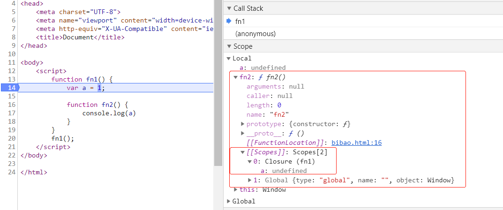

前言：
对于大多数前端同学来说闭包一直是个很让人困惑的问题，我自己之前虽说在项目中有意无意的用到但是都没有刻意的去深入研究它，大部分时间是为了应付面试。后来某一天我突然意识到自己要去认真研究下它，因为知其然而不知其所以然并不应该是学习一种语言的态度，所以我打算写篇文章尝试着用我自己的理解去解释下闭包。
一、什么是闭包?
关于闭包不同的人有不同的理解，在javaScript高级编程第三版中给出了如下的解释：闭包是指有权访问另一个函数作用域中的变量的函数。其实解释出来说闭包就是一个函数，只不过它可以访问别的函数内部的变量。单纯的看这句话很是抽象 ，我们先看一段代码:
function fn1() {
var a = 1;
function fn2() {
console.log(a)
}
}
fn1();
这段代码中我们先声明了一个函数fn1然后在函数内部生明了一个函数fn2而我们在fn2中引用了fn1中的变量a ；当我们执行fn1时，这时候闭包就产生了。我们可以借助谷歌浏览器f12调试工具很清楚的看到闭包

在14行打断点后我们很清楚的看到在内部函数f2内部有一个Closure的对象，这就是我们所说的闭包.此时我们对闭包可以更准确的的解释：闭包是一个存在内部函数对象里的包含被引用变量的对象。
二、如何产生闭包？
当一个嵌套的内部函数引用了外部函数的变量时，就产生了闭包。上例中 内部函数fn2引用了外部函数f1的内部变量a 因此就产生了闭包。
三、常见的产生闭包的方式
(1)、将函数作为另一个函数的返回值
function add() {
var num = 0;
var fn2 = function() {
num++;
console.log(num)
}
return fn2
}
var fn = add();
fn() //1
fn() //2由于内部函数对象fn2引用了外部函数add内的变量num，所以当add方法执行时就产生了闭包。
(2)、将一个函数当作实参传入
function showMsg(msg, time) {
setTimeout(function() {
alert(msg)
}, time)
}
showMsg('hello', 2000)由于内部匿名函数引用了外部函数showMsg的变量msg 因此产生了闭包
四、闭包的作用
我们接着使用之前的例子:
function add() {
var num = 0;
var fn2 = function() {
num++;
console.log(num)
}
return fn2
}
var fn=add();
fn()//1
fn()//2(1)函数在执行完毕后依然保留内部变量
正常情况下add函数执行完成后，add函数内部的局部变量将会被垃圾回收机制回收，但当我们用fn保留对add内部的函数的引用时 内部函数对象就不会被释放，而内部函数又引用了num，因此变量num在add函数执行完毕后也不会被释放，而是继续存在内存中。
（2）访问函数内部变量
由于js的机制导致我们访问某一变量时我们只能从内往外部去访问，但是使用闭包我们就可以访问某函数内部的局部变量。从上例可以看到，我们在window中调用了add（）函数，并且访问到了add的局部变量 num
五、闭包在实际开发中的应用
正如文章开头所说，我们在实际的开发过程中总能有意无意的用到闭包，下面我随便列举几个例子，更好的帮大家理解闭包、
(1)、循环便利加监听
现在我有一个ul 内部4个li，要求点击每个li的时候弹出其对应的下标，大家很容易想到如下写法:
let list = document.querySelectorAll('li');
for (var i = 0; i < list.length; i++) {
var el = list[i];
el.index = i;
el.onclick = function() {
alert(el.index)
}
}当我们执行的时候发现，点击的时候弹出的都是3。这是因为i声明的是一个全局变量，当我们加监听之前循环已经执行完毕了这时候我们得到的i是3，所以每一个el.indexf赋的值都是一样的，所以每次点击都是3.我们现需要改进下代码:
let list = document.querySelectorAll('li');
for (var i = 0; i < list.length; i++) {
(function() {
var el = list[i];
el.index = i;
el.onclick = function() {
alert(el.index)
}
})(i)
}我们在监听事件外部 包了一个匿名的自执行函数，这时候我们发现都能得到我们期望的结果了。因为for循环每此执行时我们将i传入了匿名函数并赋值给了el.index，而onclick的函数又引用了el.index这个变量，因此产生了闭包，每一个index都将被存下。
(2)、缓存this
var name = 'Jony';
var obj = {
name: 'Tom',
fn: function() {
var _this = this;
return function() {
return function() {
alert(_this.name)
}
}
}
}
obj.fn()()() //Tom此例子中，我们obj.fn()得到了一个函数对象，并且此时得this是obj，我们把this赋值给了_this，因此我们执行最终得alert时得到得是Tom
(3)、封装JS模块
我们为了防止变量被污染经常回去使用闭包去封装JS 模块
(function(window) {
var msg = "Hello"; //私有变量
function fn() {
return msg.toLowerCase()
}
function fn2() {
return msg.split('');
}
window.module = {
fn: fn,
fn2: fn2
}
})(window)以上就是我个人对于闭包的理解，希望能帮助到正在为闭包而困惑的你.
如有错误敬请指出!!，与诸君共勉!!